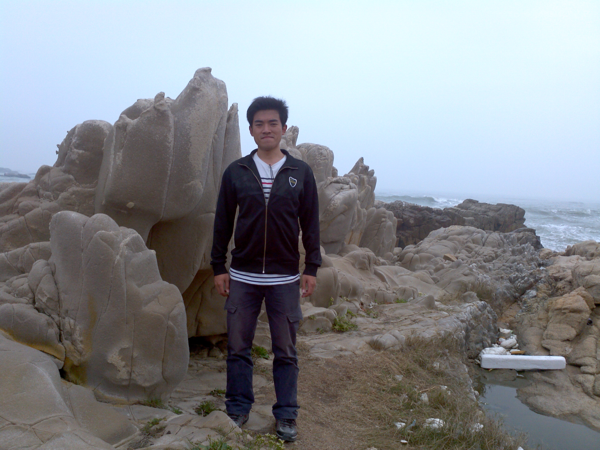

2012～2013寒假于俊怡汇公司的工作心得
去年寒假，我和同专业的世杰、正城同学三个人有机会能去俊怡汇汽车服务公司实习。通过这段时间的学习，从无知到认知，到深入了解，渐渐的我喜欢上汽车服务这个行业，让我深刻的体会到学习的过程是最美好的，在整个实习过程中，我每天都有很多新的体会，新的知识。实习生活，感触是很深的，提高的方面很多，但对我来说最主要的是工作能力的进步。
前些天上课翻到自己随身携带的笔记本里偶然发现上面一页写着这样简单的流程：湿区洗车、磨泥、冲水、喷柏油、全能水、冲水、去污蜡、洗车、干区、硬蜡、三十分钟抹蜡。看完才想起这是在美容店第一天上班的那个晚上自己总结出来的一个流程记在本子上的。也许当时是怕犯错，虽然谁都有犯错的时候，工作中第一次做错了不要紧，店里的工作人员会纠正并原谅自己，但我知道下次如果还在同一个问题上犯错误，那就再也没有第一次犯错时的原谅了，所以，在美容店工作的短暂半个月里，我们每天在规定的时间上下班，上班期间要认真按时地完成安排的工作任务，不能草率敷衍了事，我们三个学生的工作态度一直都很认真、严谨。我们平时在店里的主要工作是一些基本的汽车美容服务，例如洗车、打蜡等等。什么事都是从简单做起，看上去不难的洗车流程，我们都不能掉以轻心。一辆脏的车开进来光顾我们店，就得有一辆干干净净的车开出去以及车主满意的笑容。每天的工作使得我也有机会可以接触到各种各样的车，遇到不懂的或者没见过的车型号，我都会通过请教那里的师傅或自己上网查阅，丰富了自己的专业知识。除了学到汽车相关知识外，我也深刻体验到了一间门店的管理文化。美容店的员工规定以及那里的文化氛围，都让我感到一个知名企业里的员工在工作上是团结紧张并不断与时俱进的。我是一个零工作经验的学生，所以这些都是值得我去学习的。能在一个服务行业内成功立足，质量抓的紧是关键，所以对员工的工作要求是很严格的，例如就有一个主管或者店长专用来检查员工工作质量的本子，发现哪个员工负责的工作做得不到位、或者平时擅自离开工作岗位等等，都要根据店规接受相应的处罚，店里还有个客户休息室，设有相关的图书报纸提供查阅，也有许多汽车相关的配件提供给客户。在那里期间，我们也有接受过一次员工培训，熟悉他们的的品牌轮胎以及相 关的规格、参数，有利于提高我们员工的素质。
通过这次实习，提高了我自己的操作技能和动手能力，也加强了理论联系实操的锻炼，提高了实践能力。这将会对我在往后两年的学习生活中有很大影响。学校实训楼的美容店也可以继续为我们提供一个学习的良好环境。相信我自己在原有的知识层面上，与另外的同学一起探讨，不断实践，达到共同进步！
